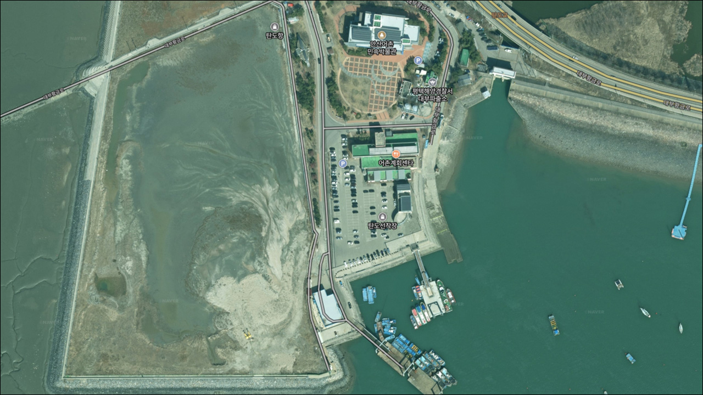
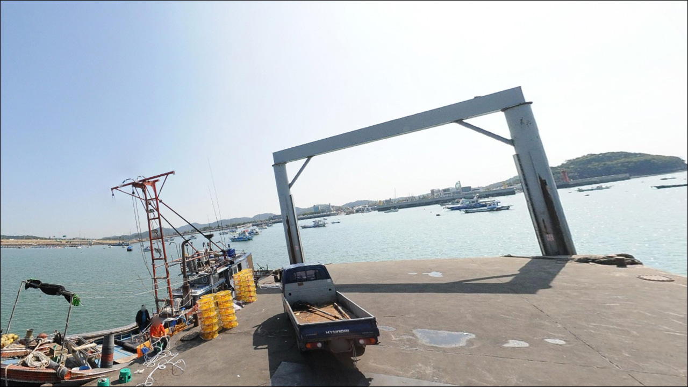
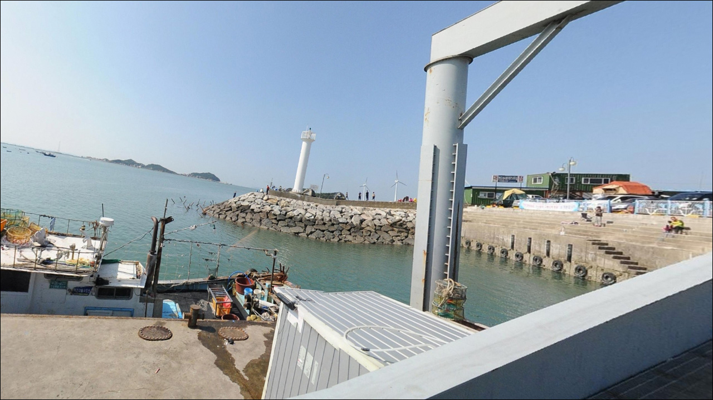
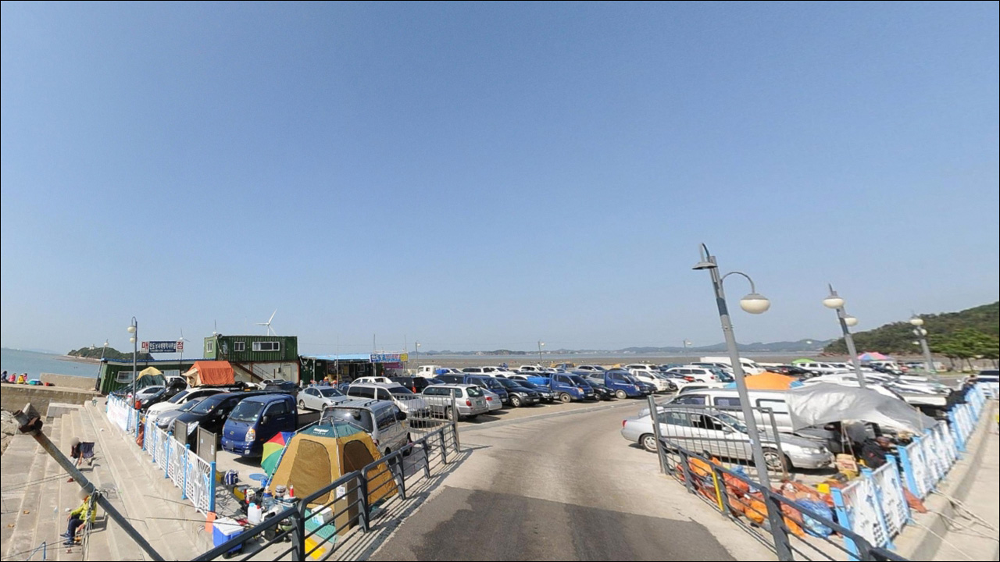
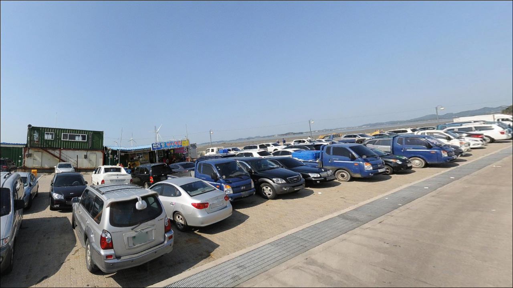
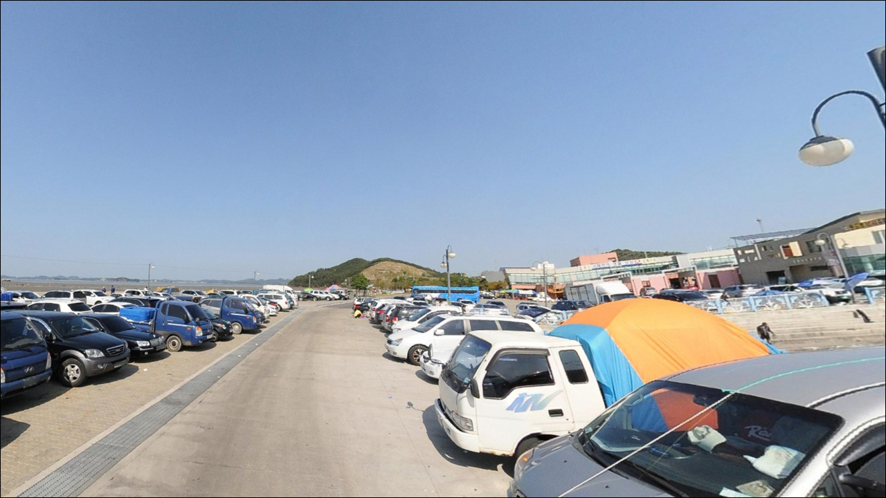
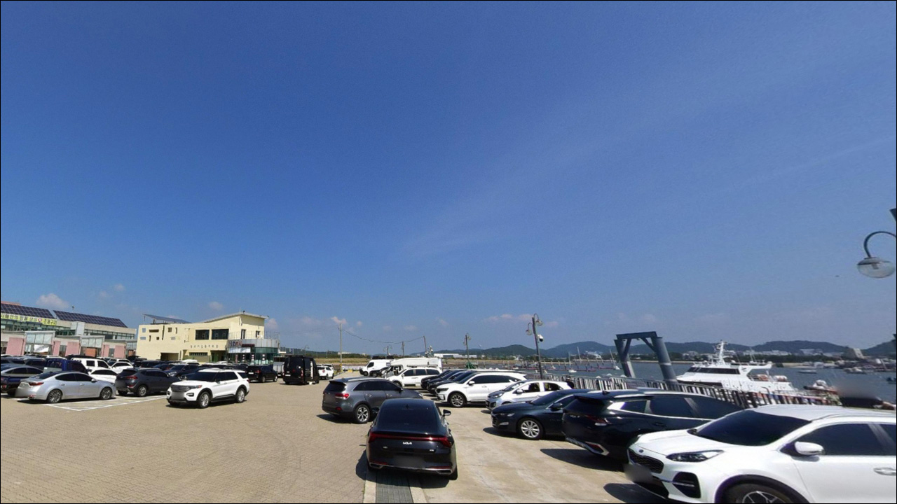
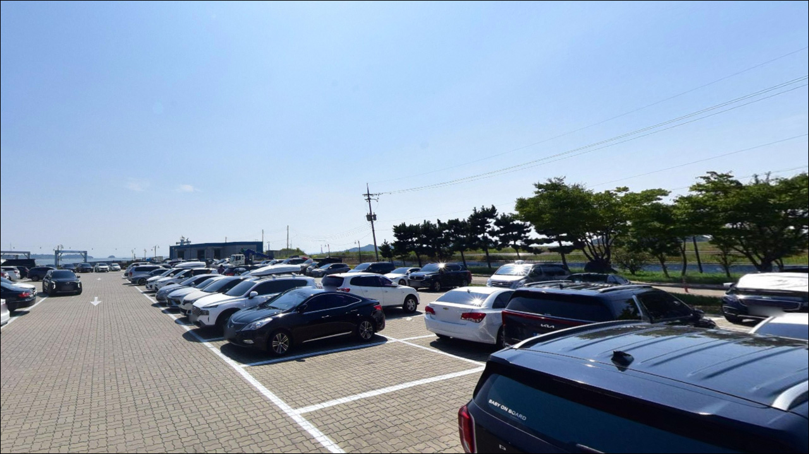
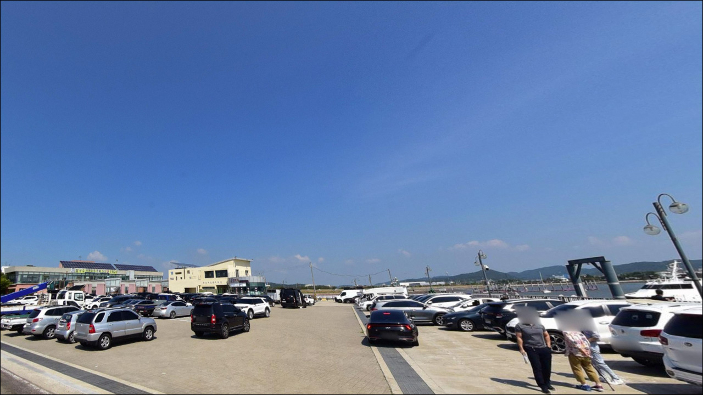

탄도항, 탄도선착장 경기 안산시 자연의 여백을 느낄 수 있는 차박, 낚시 명소
이 페이지에는 광고(제휴 링크 포함)가 있으며, 광고 링크를 통해 구매하면 운영자가 판매 수익 또는 수수료를 받을 수 있습니다. 포인트 사진: 카카오맵 스카이뷰·로드뷰. 이 페이지의 지도·사진 이미지는 카카오맵의 실제 서비스 이미지와 다를 수 있습니다.


포인트 안내
탄도항
경기 안산시 단원구 선감동 717-3
수심이 1.2~2m에 불과한 탄도항에서
물때를 확인하지 않고 간조 시간대에 진입하면
선착장 앞 갯벌이 드러나
채비를 던질 수 있는 수면 자체가 사라집니다.
서해 대조차 환경 아래
들물 전후 타이밍이 낚시 성패를 가르는
포인트입니다.
이 글은
탄도항의 진입 환경, 물때 판단 기준,
낚시 방식별 공략 조건, 차박 체류 여건에 집중합니다.
조황 단정이나 특정 어종 보장은
이 글의 범위에 포함되지 않습니다.

1. 진입 동선과 포인트 접근성
탄도항은 대부도 방향 지방도를 따라 진입하는 구조로,
포장도로가 항구까지 이어져 있어
일반 승용차나 소형 SUV 기준 진입에 무리가 없습니다.
항구 내부에 주차 공간이 넉넉하게 조성되어 있어
대형 차량도 회차가 가능한 수준으로
판단됩니다.
주차는 선착장 인근 제1주차장을 기본으로 하되,
주말 관광객 유입이 상당한 편이라
성수기 낮 시간대에는 혼잡해질 가능성이 있습니다.
낚시 목적 방문이라면
평일 이른 시간이나 야간 진입이
주차 여건을 확보하기 수월합니다.
항구 초입에 안산어촌민속박물관이 있어
주차 구역이 여러 구역으로 나뉩니다.
낚시 포인트 접근성만 따지면
선착장과 가장 가까운 구역을
먼저 확인하는 편이 효율적입니다.

2. 차박 환경과 야간 체류 여건
탄도항은 누에섬 전망대와 갯벌 체험 등
관광 자원이 집중된 어항으로,
어촌 특유의 고요함보다는
방문객 유동이 있는 관광지 분위기에 가깝습니다.
야간에는 한적해지는 편이지만
완전한 프라이버시 차박 환경을 기대하기는 어려운 구조입니다.
방파제와 호안 일부에는 야간 조명이 있는 편이지만
낚시 구간 전체가 밝은 것은 아닐 수 있어
개인 헤드랜턴은 반드시 준비해야 합니다.
외항 방향으로 노출된 구간에서는
강한 바람이 불 때 차박 체류가 불편해질 수 있으므로
기상 예보와 풍향 확인을 출발 전에 습관화하는 편이 좋습니다.
항 인근에 안산탄도항 노을캠핑장이 운영되고 있어
정식 캠핑 시설을 원한다면
사전 예약 후 이용이 가능합니다.
주차장 내 차박 관련 현장 규정은
방문 전 현장 안내판이나
안산시 담당 기관을 통해 확인하는 것이 안전합니다.


3. 주변 편의시설 및 인프라 현황
탄도항 인근에는 수산물 직판장이 있어
신선한 해산물을 구입하거나 식사를 해결하기 좋습니다.
식당과 카페가 항구 주변에 모여 있는 편이라
출조 전후 식사 여건은 나쁘지 않습니다.
주차장은 무료로 운영되며
항구 초입 안산어촌민속박물관 인근까지
여러 구역에 걸쳐 있습니다.
낚시 채비나 생필품은
출발 전에 미리 갖추고 오는 편이 좋습니다.
편의점 위치와 운영 시간은
출발 전 네이버지도 또는 카카오맵으로
확인하는 것이 정확합니다.
안산어촌민속박물관이 항구 진입로 바로 인근에 있어
낚시 대기 시간을 활용하기 좋습니다.
간조 때 열리는 누에섬 바닷길은
산책 코스로 알려져 있지만
밀물이 빠르게 차오르는 구간이므로
입도 시에는 물때 확인이 선행되어야 합니다.

4. 들물 전후 타이밍이 탄도항 낚시 조과를 결정하는 이유
탄도항 방문 전 가장 먼저 확인할 것은 물때입니다.
수심이 1.2~2m에 불과한 이 포인트에서
간조 시간대 진입은 갯벌 노출로
낚시 자체가 불가능해지는 상황을 만들어냅니다.
바다타임에서 안산·탄도 기준 물때를 확인하고
들물이 시작된 후 수면이 안정되는
전후 2~3시간이 실질적인 낚시 가능 구간입니다.
물때란 하루 두 차례 반복되는 밀물과 썰물의 주기로,
서해 낚시에서는 수심 변화와 조류 흐름을
결정하는 가장 중요한 변수입니다.
누에섬으로 이어지는 바닷길은
밀물이 빠르게 차오르는 구간이므로
이 구간 근처를 이동할 계획이 있다면
물때를 반드시 재확인해야 합니다.
방파제와 선착장 바닥은 해초가 낀 구간에서
미끄러운 편입니다.
미끄럼 방지 신발과 구명조끼는 기본 안전 장비이며,
야간 입장 시에는 헤드랜턴과 예비 조명도 필수입니다.
어선 이동 동선과 수산 작업 구역에는
채비가 걸리지 않도록 자리를 잡는 것이 기본 매너입니다.

5. 지형 기반 낚시 여건 분석
탄도항의 저질은 펄 바닥이 중심이며
수심은 1.2~2m 수준으로
서해 갯벌형 어항의 전형적인 구조입니다.
외항 방파제 끝단은 조류가 모이는 구간이라
들물 타이밍에 어류 활성도가 올라오는 편이며,
내항 쪽 선착장 앞은 수면이 잔잔해
찌낚시나 훌치기 스타일에 어울리는 구간입니다.
탄도 배수갑문 수문 주변은
민물과 바닷물이 만나는 기수역 성격의 구간입니다.
기수역이란 담수와 해수가 혼합되는 수역으로,
먹이를 쫓는 어종이 모여드는
낚시 포인트로 형성되기 쉬운 환경입니다.
이 구간 근처에서는 우럭이나 노래미를
소형 루어로 탐색해 볼 만합니다.
수심이 얕아 장타 원투보다는
20~40m 내외 근·중투가 이 포인트 구조에 맞습니다.
봄부터 가을까지가 주요 시즌이며,
겨울철에는 전반적으로 조황이 부진한 편입니다.
최신 조황은 출조 전 반드시 검색해 보시기 바랍니다.


6. 탄도항 지형에 맞는 낚시 스타일
원투낚시는 이 포인트에서 가장 기본적으로 활용되는 방식입니다.
청갯지렁이나 홍갯지렁이가 기본 미끼이며
20~40m 내외 근·중투 후 바닥을 기다리는 방식으로
망둥어와 붕장어를 공략하는 데 어울립니다.
수심이 얕으므로 봉돌은 가볍게,
입질은 예민하게 파악하는 것이 기준입니다.
숭어와 전어를 노린다면
선착장 발치 훌치기나 릴찌낚시가 잘 맞습니다.
특히 가을 시즌에는 전어가 기대 어종으로 언급되는 편이며,
이때 카드 채비를 활용하는 방식도
이 포인트 구조에 어울립니다.
삼치가 회유하는 시기에는 스푼 루어를
방파제 외항 끝단에서 병행해 볼 수 있습니다.
수문 주변 기수역 구간에서는
소형 지그헤드에 그럽웜 조합으로
우럭이나 노래미를 노리는 라이트 루어가 어울립니다.
수심이 얕고 구조물 주변 탐색이 중심이 되므로
천천히 끌어오며 바닥 반응을 확인하는 방식이
이 지형에 효율적입니다.

7. 대안 포인트와 플랜 B 동선
탄도항 조류가 지나치게 강하거나
갯벌 노출로 낚시 여건이 여의치 않을 때
가장 가까운 대안은 전곡항입니다.
같은 해역에 있어 조류·기상 조건이 비슷한 상황에서도
포인트 구조가 달라 입질 패턴이 달라지는 경우가 있으며,
루어 낚시 비중이 높은 곳으로 알려져 있습니다.
어종 다양성을 더 원한다면
탄도항에서 약 3km 거리의
제부도 피싱피어가 대안이 됩니다.
어종 구성이 유사하면서도
낚시 여건이 더 다양한 편으로,
탄도항과 같은 날 묶어서 이동하는 동선도
효율적입니다.
영흥도 진두항 방파제는
탄도항에서 약 14km 거리이며
수도권 서해 낚시에서 어종 다양성과 접근성이
두루 갖춰진 포인트로 알려진 곳입니다.
탄도항 조황이 전반적으로 부진한 날이라면
이동을 검토해볼 만한 대안 포인트입니다.

물때를 맞추면
탄도항은 수도권 서해 방파제 낚시로 충분합니다
원투낚시나 릴찌로 망둥어·숭어를 노리는
생활낚시 스타일이라면
탄도항의 얕은 펄 바닥 구조는
크게 낯선 환경이 아닙니다.
봄부터 가을까지 시즌 폭이 넓고
수도권에서 접근성이 좋아
반나절 출조 계획에도 부담이 없는 편입니다.
다만 서해 대조차 환경이라
물때를 무시하고 진입하면 갯벌만 마주치게 됩니다.
바다타임 기준 들물 전후 타이밍 확인,
미끄럼 방지·구명조끼 안전 장비,
채비 사전 준비,
이 세 가지를 갖추고 간다면
수도권 근교 서해 방파제 낚시로는
만족스러운 출조가 될 수 있는 곳입니다.
낚시 후 항구 앞에서 조용히 차박으로 하룻밤 머무는 계획이라면
평일 야간 위주로 계획하거나
인근 노을캠핑장을 사전 예약해 두는 것이
탄도항을 알뜰하게 활용하는 방법입니다.